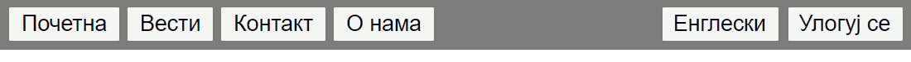
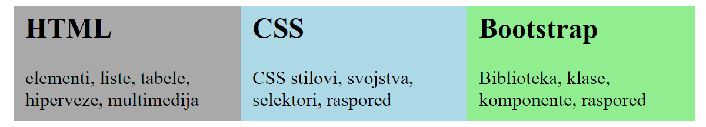

Распоред елемената - питања¶
-
Q-27: Да би се HTML блокови надовезивали слева на десно, потребно је да сваки од тих блокова има ограничену ширину и дефинисано једно својство. Које?
- box-sizing: border-box;
- Не.
- float: left;
- Тачно!
- overflow: auto;
- Не.
- margin: auto;
- Не.
- Линије са леве и десне стране садржаја стране.
- Не.
- Фиксирана оријентација екрана при његовом окретању.
- Не.
- Садржај стране је фиксне ширине, позициониран по средини екрана.
- Тачно!
- Садржај стране ће заузети сву расположиву ширину у прозору прегледача.
- Не.
Q-28: Шта се постиже следећим CSS кодом?
body {
margin: auto;
width: 800px;
}
- За та два дугмета је постављено својство float: right; а за остала четири својство float: left;
- Тачно!
- Довољно је за остала четири дугмета поставити својство float: left;
- Не.
- Елементи се не могу овако позиционирати у истом блоку.
- Не.
- Начин постоји, али није наведен међу понуђеним одгворима.
- Не.
Q-29: Дугмад са слике су елементи истог типа и налазе се у истом HTML блоку. На који начин су два дугмета са десне стране могла да буду одмакнута од остала четири?

.prva.kolona {background-color:darkgray;}
.druga.kolona {background-color:lightblue;}
.treca.kolona {background-color:lightgreen;}- Не.
.kolona {float:left; max-width:180px; padding:10px;}
.prva {background-color:darkgray;}
.druga {background-color:lightblue;}
.treca {background-color:lightgreen;}- Тачно!
.kolona {float:left; max-width:180px; padding:10px;}
.prva kolona {background-color:darkgray;}
.druga kolona {background-color:lightblue;}
.treca kolona {background-color:lightgreen;}- Не.
Q-30: Ово је део HTML кôда једне веб стране.
<body>
<div class="prva kolona"> <h2> HTML </h2> <p> elementi, liste, tabele, hiperveze, multimedija </p> </div>
<div class="druga kolona"> <h2> CSS </h2> <p> CSS stilovi, svojstva, selektori, raspored </p> </div>
<div class="treca kolona"> <h2> Bootstrap </h2> <p> Biblioteka, klase, komponente, raspored </p> </div>
</body>
Који од понуђених стилова даје изглед у прегледачу као на следећој слици?

{kind=link}
{kind=link}
{kind=link}
{kind=link}
{kind=link}
{kind=link}
{kind=link}
{kind=link}
{kind=link}
{kind=link}
{kind=link}